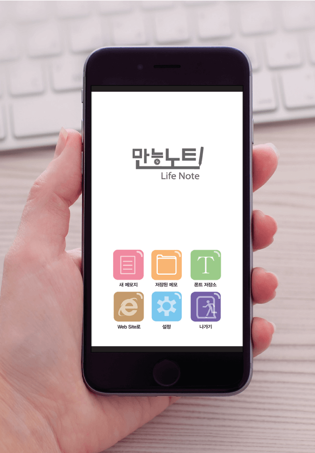
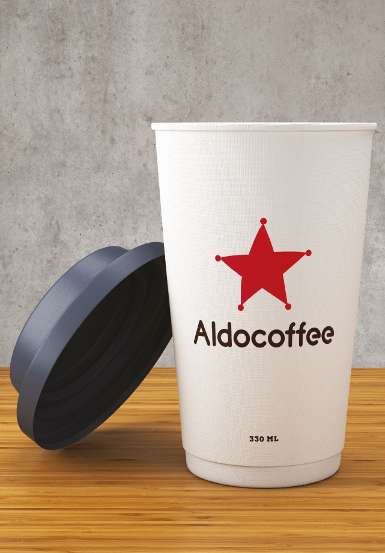

My Design
Visual Design 작품들
① PACKAGE ② ADVERTISE ③ ADITORIAL
④ MODELING ⑤ UIUX ⑥ LOGODESIGN
PACKAGE
패키지 디자인, 수정테이프 '화이트'
디자인 컨셉은 수정테이프 안에 있는 부속품으로 톱니바퀴를 이용해 패턴을 만들었고, 서체는 윤고딕 320 및 색상은 수정액과 같은 파란색 색상 계열로 맞췄다.
패키지 디자인, 수정테이프 '화이트'
디자인 컨셉은 수정테이프 안에 있는 부속품으로 톱니바퀴를 이용해 패턴을 만들었고, 서체는 윤고딕 320 및 색상은 수정액과 같은 파란색 색상 계열로 맞췄다.
ADVERTISE
광고디자인 , 코엑스 서울 국제 도서전
코엑스에서 하는 제 22회 서울 국제 도서전 포스터 리디자인이며 영문글자 에 타이포를 넣었고, 날짜 정보, 행사소개의 정보가 들어가 있습니다. 아래 이미지에는 책의 일러스트를 넣어 포스터 다운 느낌을 주었다.
광고디자인 , 코엑스 서울 국제 도서전
코엑스에서 하는 제 22회 서울 국제 도서전 포스터 리디자인이며 영문글자 에 타이포를 넣었고, 날짜 정보, 행사소개의 정보가 들어가 있습니다. 아래 이미지에는 책의 일러스트를 넣어 포스터 다운 느낌을 주었다.
ADITORIAL
에디토리얼 , 잡지 리디자인 LUEL
잡지 하나를 선정을 한 뒤에 새롭게 그리드 시스템 재배치, 타이포그라피 리설정 등 리디자인 하는 컨셉으로 잡았다. 이 잡지(2016년 루엘 4월호)를 선정한 이유는 디자인에 관한 이야기나 먹을거리 등 관심분야가 많아서 선정을 하였다.
에디토리얼 , 잡지 리디자인 LUEL
잡지 하나를 선정을 한 뒤에 새롭게 그리드 시스템 재배치, 타이포그라피 리설정 등 리디자인 하는 컨셉으로 잡았다. 이 잡지(2016년 루엘 4월호)를 선정한 이유는 디자인에 관한 이야기나 먹을거리 등 관심분야가 많아서 선정을 하였다.
MODELING
3D 모델링, 텀블러 디자인
물건 하나를 정해서 비슷하게 리디자인 하는 형식으로 나아갔다. 기존 머그컵의 두배의 크기에 잘린 원뿔형 역삼각형 모양으로 만들었고 뚜껑은 열고 닫을 수 있고 또는 그대로 열려있는 구멍에 따라 마실 수가 있다..
3D 모델링, 텀블러 디자인
물건 하나를 정해서 비슷하게 리디자인 하는 형식으로 나아갔다. 기존 머그컵의 두배의 크기에 잘린 원뿔형 역삼각형 모양으로 만들었고 뚜껑은 열고 닫을 수 있고 또는 그대로 열려있는 구멍에 따라 마실 수가 있다..

UI / UX
UI / UX , 만능노트 Life Note
이 어플리케이션의 컨셉은 모든 사람들이 편하게 쓸 수 있는 필기장이다, 필기장이면서 메모장인데, 단순한 메모장이 아닌 여러가지 기능들도 포함되어있고 다양한 폰트들, 축약된 포토샵 컨셉으로 만들었다.
UI / UX , 만능노트 Life Note
이 어플리케이션의 컨셉은 모든 사람들이 편하게 쓸 수 있는 필기장이다, 필기장이면서 메모장인데, 단순한 메모장이 아닌 여러가지 기능들도 포함되어있고 다양한 폰트들, 축약된 포토샵 컨셉으로 만들었다.

LOGODESIGN
브랜드디자인 , aldocoffee
동글동글한 서체의 컨셉으로 잡았고 별모양의 심볼을 넣어 만들었으며 색상은 원두색상으로 하였고, 사진의 컵은 어떤 느낌인지 보기 위하여 만들었다.
브랜드디자인 , aldocoffee
동글동글한 서체의 컨셉으로 잡았고 별모양의 심볼을 넣어 만들었으며 색상은 원두색상으로 하였고, 사진의 컵은 어떤 느낌인지 보기 위하여 만들었다.